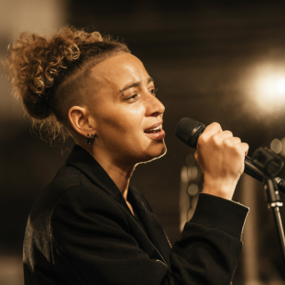

Morjane, autrice-compositrice-interprète réunionnaise.
Acte I : Dans la Fissure
Morjane, autrice, compositrice et interprète réunionnaise
Un EP narratif de 7 titres qui explore les fissures humaines : les contradictions, les blessures et les histoires que l'on continue à vivre même lorsqu'on les comprend.
Un projet où la musique devient la porte d'entrée.

En 30 secondes
L'essentiel
Acte I : Dans la Fissure, EP narratif de 7 titres.
Un univers musical, narratif et immersif autour des fissures humaines.
Management, booking, programmation, résidences, collaborations et diffusion.
Aujourd'hui
État d'avancement
Aujourd'hui
- Écriture des 7 titres terminée
- Direction artistique définie
- Univers narratif structuré
- Premiers dossiers éditoriaux en cours
- Production musicale en cours
- Développement de l'expérience immersive en cours
Acte I : Dans la Fissure s'inscrit dans un univers artistique plus vaste où musique, narration et immersion racontent une même histoire.
Écoute rapide Maquettes audio
Deux maquettes de travail pour entrer directement dans la matière sonore du projet.
Cosmos
Maquette
En bas
Maquette
Vérité coupée
Maquette
Le point de départ Pourquoi "Dans la Fissure" ?
Le projet est né d'une question simple :
Pourquoi continue-t-on alors qu'on sait déjà ?
Pourquoi répète-t-on certains schémas ?
Pourquoi certaines blessures continuent-elles de nous accompagner même lorsqu'on les comprend parfaitement ?
Chaque chanson explore une fissure différente.
L'objectif est de construire une œuvre cohérente où la musique devient la porte d'entrée vers quelque chose de plus vaste.
Les chansons comme portes Les fissures
Intro
Ouvrir les silences plutôt que couvrir le bruit.
Réflexion
Continuer à croire malgré les mêmes chutes.
Déserteur
Quand l'absence devient une rupture.
Vérité coupée
Tout ce qu'on tait finit par nous façonner.
En bas
Refuser de vivre à la surface.
Cosmos
Être vue pour ce que l'on est, pas pour ce que l'on apaise.
Outro
Avancer sans tout réparer.
Sept chansons.
Sept fissures.
Une même traversée.
Pourquoi continue-t-on alors qu'on sait déjà ?
Au-delà de la musique Une œuvre en expansion
Chaque morceau constitue une porte d'entrée vers un univers plus large : récits, réflexions, vidéos et expériences interactives prolongent l'œuvre au-delà de la musique.
Dossiers narratifs
Des textes et réflexions qui prolongent les chansons et explorent les fissures qu'elles révèlent.
Contenus vidéo
Une série de capsules où Morjane raconte les histoires, les tensions et les questions qui se cachent derrière chaque titre.
Expérience immersive (web)
Un site narratif en cours de développement permettant de traverser l'univers de l'EP, explorer ses fissures et découvrir les contenus cachés derrière chaque morceau.
Liens rapides Découvrir Morjane
Rencontres professionnelles Collaborations recherchées
Je cherche aujourd'hui à échanger avec des professionnels capables d'apporter un regard extérieur, une expertise ou un accompagnement sur le long terme.
L'objectif n'est pas seulement de produire des chansons, mais de construire un projet artistique cohérent et durable.
Domaines d'intérêt :
Management
Booking
Programmation
Résidences artistiques
Collaborations
Accompagnement stratégique
Diffusion régionale, nationale et internationale
Contact
Reprendre contact
Soutien
Soutenir le projet
ACTE I est construit en indépendant : chansons, enregistrements, visuels, clips, site immersif et tout ce qui gravite autour de l'univers Morjane.
Si ce projet résonne en toi, tu peux aider à lui donner une suite.
Soutenir le projet